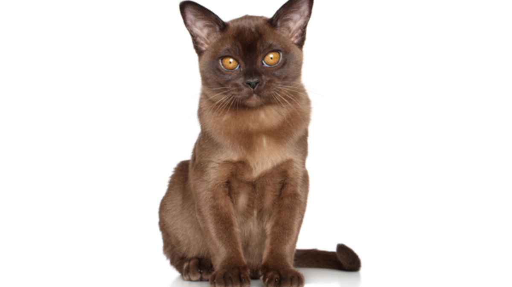

Бурманская кошка – воплощение сногсшибательной харизмы и грации, достойной особы королевских кровей. Заслужить любовь этой красавицы очень легко.
Тело очень темного коричневого цвета. Уши и маска почти черные. Зеркало носа и подушечки лап темно-коричневого цвета. Американцы называют этот окрас "соболек".

Это осветленная версия коричневого (соболиного) бурманского окраса. Тело теплого, молочно-шоколадного цвета или кофе с молоком. В этом окрасе хорошо выражены поинты – на мордочке масочка темного оттенка, лапки в носочках и темный хвост. Подушечки лап и зеркало носа от цвета корицы до шоколадного.
